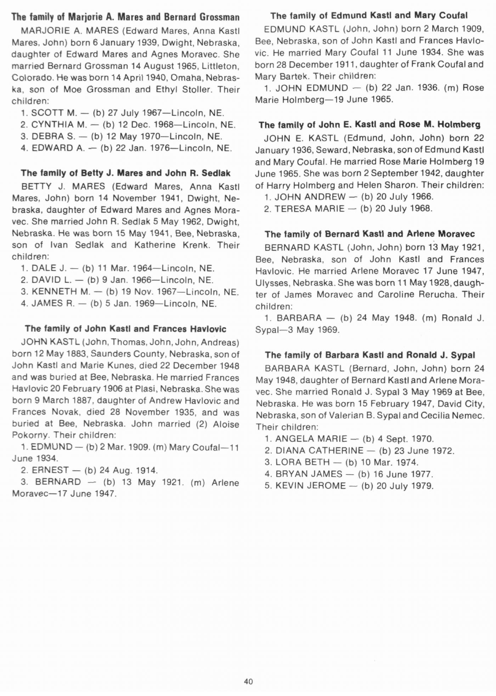

The book · The Family of John Kastl
Page 40 The family of Marjorie A. Mares and Bernard Grossman


Transcription
The family of Marjorie A. Mares and Bernard Grossman
MARJORIE A. MARES (Edward Mares, Anna Kastl Mares, John) born 6 January 1939, Dwight, Nebraska, daughter of Edward Mares and Agnes Moravec. She married Bernard Grossman 14 August 1965, Littleton, Colorado. He was born 14 April 1940, Omaha, Nebraska, son of Moe Grossman and Ethyl Stoller. Their children:
- SCOTT M. — (b) 27 July 1967—Lincoln, NE.
- CYNTHIA M. — (b) 12 Dec. 1968—Lincoln, NE.
- DEBRA S. — (b) 12 May 1970—Lincoln, NE.
- EDWARD A. — (b) 22 Jan. 1976—Lincoln, NE.
The family of Betty J. Mares and John R. Sedlak
BETTY J. MARES (Edward Mares, Anna Kastl Mares, John) born 14 November 1941, Dwight, Nebraska, daughter of Edward Mares and Agnes Moravec. She married John R. Sedlak 5 May 1962, Dwight, Nebraska. He was born 15 May 1941, Bee, Nebraska, son of Ivan Sedlak and Katherine Krenk. Their children:
- DALE J. — (b) 11 Mar. 1964—Lincoln, NE.
- DAVID L. — (b) 9 Jan. 1966—Lincoln, NE.
- KENNETH M. — (b) 19 Nov. 1967—Lincoln, NE.
- JAMES R. — (b) 5 Jan. 1969—Lincoln, NE.
The family of John Kastl and Frances Havlovic
JOHN KASTL (John, Thomas, John, John, Andreas) born 12 May 1883, Saunders County, Nebraska, son of John Kastl and Marie Kunes, died 22 December 1948 and was buried at Bee, Nebraska. He married Frances Havlovic 20 February 1906 at Plasi, Nebraska. She was born 9 March 1887, daughter of Andrew Havlovic and Frances Novak, died 28 November 1935, and was buried at Bee, Nebraska. John married (2) Aloise Pokorny. Their children:
- EDMUND — (b) 2 Mar. 1909. (m) Mary Coufal—11 June 1934.
- ERNEST — (b) 24 Aug. 1914.
- BERNARD — (b) 13 May 1921. (m) Arlene Moravec—17 June 1947.
The family of Edmund Kastl and Mary Coufal
EDMUND KASTL (John, John) born 2 March 1909, Bee, Nebraska, son of John Kastl and Frances Havlovic. He married Mary Coufal 11 June 1934. She was born 28 December 1911, daughter of Frank Coufal and Mary Bartek. Their children:
- JOHN EDMUND — (b) 22 Jan. 1936. (m) Rose Marie Holmberg—19 June 1965.
The family of John E. Kastl and Rose M. Holmberg
JOHN E. KASTL (Edmund, John, John) born 22 January 1936, Seward, Nebraska, son of Edmund Kastl and Mary Coufal. He married Rose Marie Holmberg 19 June 1965. She was born 2 September 1942, daughter of Harry Holmberg and Helen Sharon. Their children:
- JOHN ANDREW — (b) 20 July 1966.
- TERESA MARIE — (b) 20 July 1968.
The family of Bernard Kastl and Arlene Moravec
BERNARD KASTL (John, John) born 13 May 1921, Bee, Nebraska, son of John Kastl and Frances Havlovic. He married Arlene Moravec 17 June 1947, Ulysses, Nebraska. She was born 11 May 1928, daughter of James Moravec and Caroline Rerucha. Their children:
- BARBARA — (b) 24 May 1948. (m) Ronald J. Sypal—3 May 1969.
The family of Barbara Kastl and Ronald J. Sypal
BARBARA KASTL (Bernard, John, John) born 24 May 1948, daughter of Bernard Kastl and Arlene Moravec. She married Ronald J. Sypal 3 May 1969 at Bee, Nebraska. He was born 15 February 1947, David City, Nebraska, son of Valerian B. Sypal and Cecilia Nemec. Their children:
- ANGELA MARIE — (b) 4 Sept. 1970.
- DIANA CATHERINE — (b) 23 June 1972.
- LORA BETH — (b) 10 Mar. 1974.
- BRYAN JAMES — (b) 16 June 1977.
- KEVIN JEROME — (b) 20 July 1979.
Transcriber’s notes
Two-column page; lower ~third of page blank (end of a section). Lineage for John Kastl (b. 1883) printed as '(John, Thomas, John, John, Andreas)' while his descendants are given as '(John, John)' / '(Edmund, John, John)' — transcribed as printed.